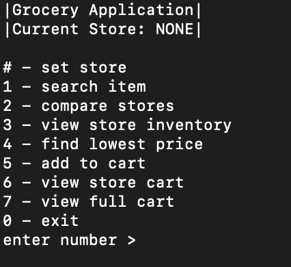
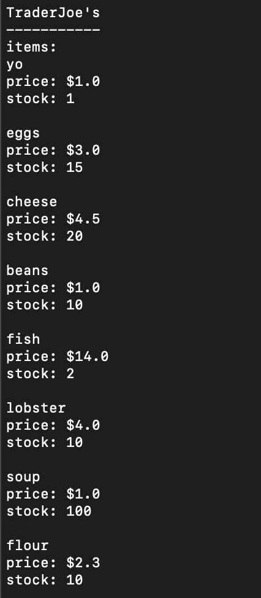
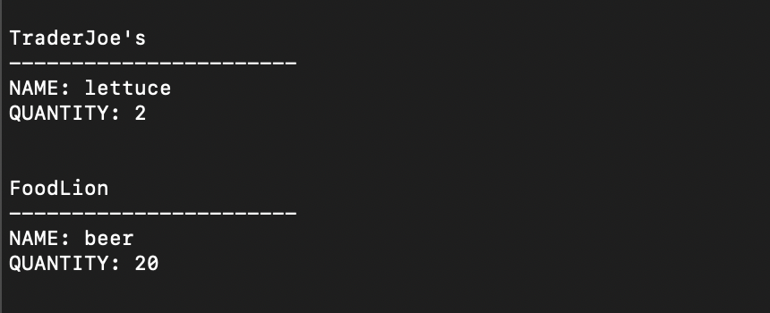
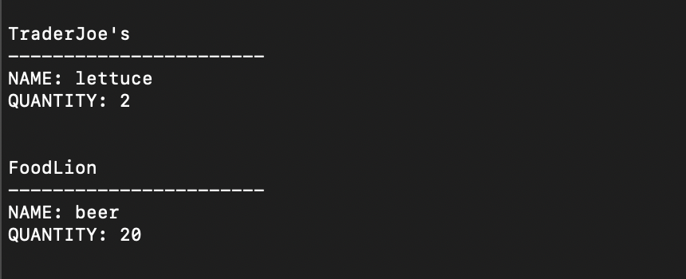

How it was done:
Using my skills from CPSC 240 (Object Oriented Analysis and Design) I created a console-based Grocery Store Interface using Java. The project uses file hydration to read in stores and their items. Additionally the Singleton and Factory Design Patterns are used in various classes within the program.


Interface Menu & Store Inventory Displays
 

Add to Cart & Full Cart Displays